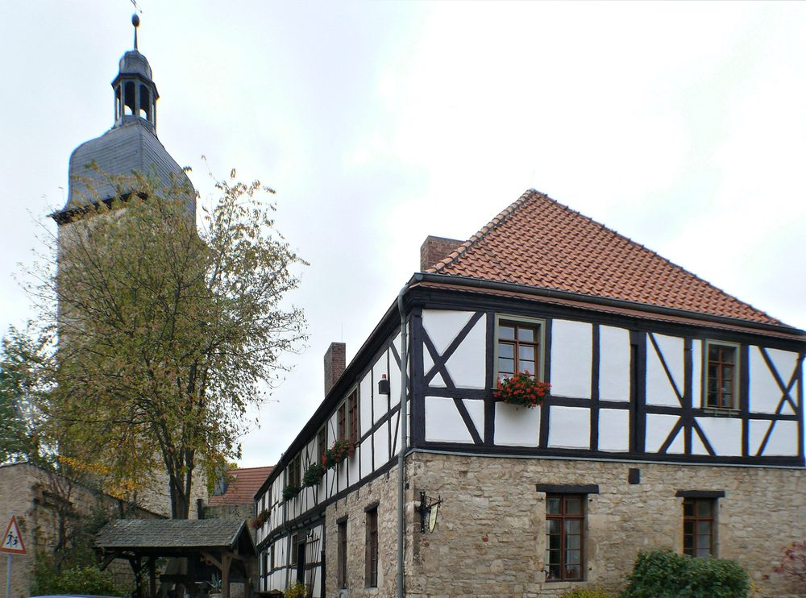

Besuch
Am Kirchhof 2–3,
39397 Kroppenstedt
Dienstag, Mittwoch und Freitag von 9 bis 13 Uhr. Alles Weitere nach einem Anruf.
Öffnungszeiten
Wann geöffnet ist
| Montag | geschlossen |
|---|---|
| Dienstag | 9 – 13 Uhr |
| Mittwoch | 9 – 13 Uhr |
| Donnerstag | geschlossen |
| Freitag | 9 – 13 Uhr |
| Samstag, Sonntag | nach Absprache |
Besichtigungen und Führungen sind außerhalb dieser Zeiten nach telefonischer Absprache möglich. Das gilt auch für Gruppen, Schulklassen und Vereine.
Gut zu wissen
- Eintritt und Führungen: Fragen zu Preisen und Gruppen beantwortet das Museum telefonisch unter 039264 35504.
- Dauer: Für die rund 260 Quadratmeter Ausstellung sollten Sie sich Zeit nehmen.
- Barrierefreiheit: Das Haus stammt von 1564 und hat mehrere Ebenen. Zu Stufen, Türbreiten und Zugängen liegen uns keine geprüften Angaben vor — bitte rufen Sie vorher an, damit wir Ihren Besuch vorbereiten können.
Termine 2026
Offene
Museumnachmittage
An diesen Tagen ist das Museum außer der Reihe geöffnet.
- So 13.09. Offener Museumnachmittag mit Kaffee & Kuchen 14 – 17 Uhr
- Sa 03.10. Offener Museumnachmittag mit Kaffee & Kuchen 11 – 17 Uhr
- Sa 24.10. Offener Museumnachmittag 14 – 16 Uhr
- Sa 05.12. Offener Museumnachmittag mit Kaffee & Kuchen 14 – 17 Uhr
Anfahrt
So kommen
Sie her
Das Museum liegt im alten Stadtkern, direkt neben der Kirche St. Martin.
Anschrift
Am Kirchhof 2–3
39397 Kroppenstedt
Landkreis Börde, Sachsen-Anhalt
Mit dem Bus
Linie 656 der BördeBus Verkehrsgesellschaft: Oschersleben – Gröningen – Kroppenstedt – Hadmersleben.
Mit dem Auto
Der Kirchhof liegt in der Altstadt. Die Zufahrt ist gepflastert und eng — fahren Sie langsam.
Wer den Besuch mit einem Rundgang verbinden will: St. Martin, Reste der Stadtbefestigung mit dem Ulenturm, das Rathaus aus dem 16. Jahrhundert und das Freikreuz liegen alle in Laufweite.
Telefon
039264 35504 Auch für Führungen außerhalb der Öffnungszeiten.
museumkroppenstedt@web.de Anfragen beantworten wir, sobald das Museum besetzt ist.
Ansprechpartnerin
Heike Wolter Museumsmitarbeiterin
Vorher noch
Vier Zahlen,
430 Jahre
Bevor Sie kommen: Das Haus, in dem die Sammlung liegt, hat selbst eine Geschichte — und die steht auf einer Tafel neben der Tür.